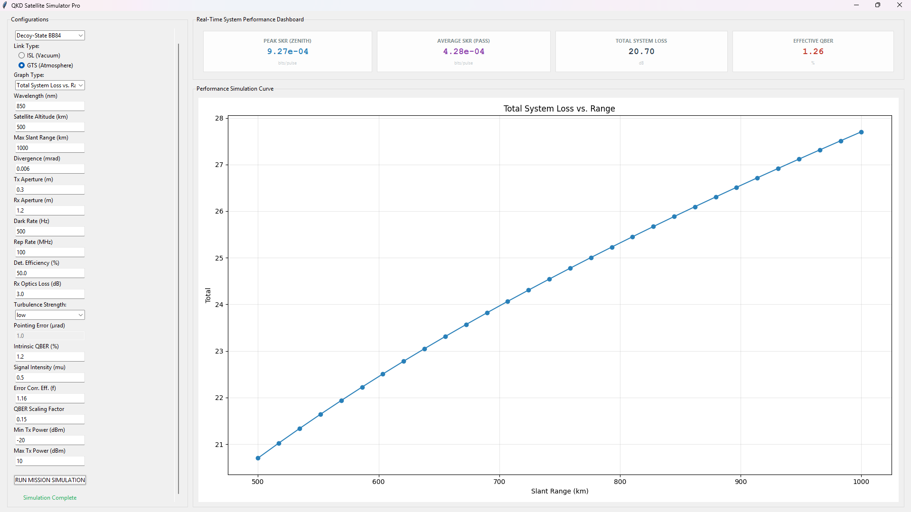

PhotonKey
Quantum Key Distribution Satellite Simulator
A desktop simulator for understanding how real satellite channels, atmospheric effects, and pointing errors shape QKD performance.
Define the optical link
Model ground-to-satellite and inter-satellite geometry, divergence and apertures.
Apply real channel effects
Include atmospheric extinction, turbulence regimes and altitude-dependent loss.
Observe protocol behavior
Analyze how BB84 and MDI-QKD respond to loss, noise and pointing instability.
Ground-to-Satellite and Inter-Satellite links
Atmospheric extinction and turbulence modeling
BB84 and MDI-QKD protocol analysis
Download PhotonKey
Available for Windows. Runs fully offline.
Download Installer Windows 10 / 11